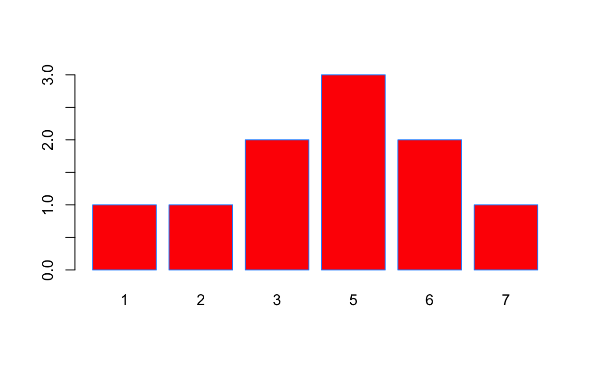
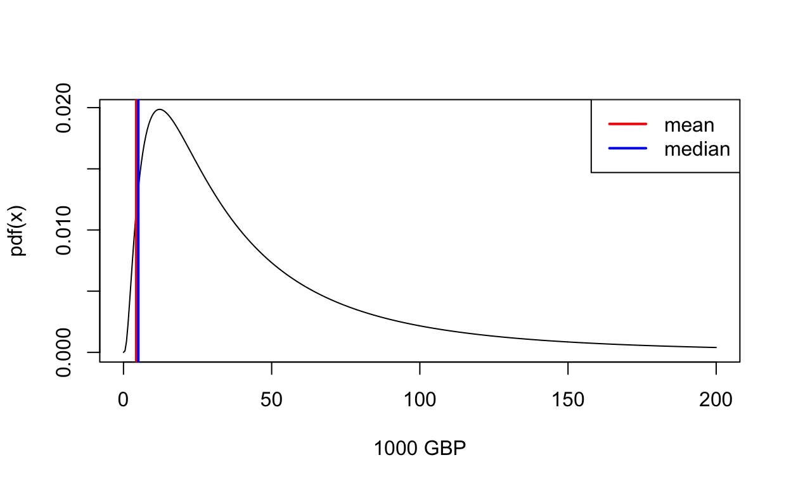

In this tutorial we will refer to chapter 3 of our textbook. Please go back there if you have any questions.
I created a vector x for you with 10 values, which will be our data in this section:
## [1] 6 2 5 3 5 1 5 7 6 3We have seen in chapter 2 of our book that the mean is a measure of centrality for a variable.
x on a piece of paper by computing \(\overline{x}=(x_{1}+...+x_{N})/N\)R function mean to do the same thing in the code box below to check your result:mean(x)unique to find out the values contained in x. How many distinct values are there?u=unique(x)
n=length(u)By sorting x in ascending order, we can easily see that there are groups of values:
sort(x)## [1] 1 2 3 3 5 5 5 6 6 7Let’s denote \(p_k\) the proportion of all entries in x that have value \(k\). I.e. \(p_1 = \frac{\text{number of times }x=x_1}{N}\). We can construct \(p_k\) in R with
p_k = table(x) / length(x)
p_k## x
## 1 2 3 5 6 7
## 0.1 0.1 0.2 0.3 0.2 0.1Variance and Standard Deviation (SD) inform us about the spread of a variable.
var and sd here:What’s going on with the \(N-1\) here? For small samples like ours (\(N=10\)), there is an adjustment we need to make. In estimating the variance, we use the information in x, but we also need a previous estimate: the mean \(\overline{x}\)! This means that we loose one degree of freedom in the estimation for \(Var(X)\) and we are left with \(N-1\) instead of \(N\) degrees of freedom. Our weights or proportions \(p_k\) therefore now become:
p_k2 = table(x) / (length(x)-1)
p_k2## x
## 1 2 3 5 6 7
## 0.1111111 0.1111111 0.2222222 0.3333333 0.2222222 0.1111111p_k2 %*% (unique(sort(x)) - mean(x))^2Lets finish this part by producing a bar plot of \(X\). This is easily achieved with the function barplot, whose main input argument is called height - the height of each bar. In our case, the height should be the number of times each value appears. We already saw above that table computes that for us.
barplot(table(x),col="red",border="dodgerblue")
A classic example of a discrete distribution is the Binomial distribution. Saying that random variable \(X\) follows a binomial distribution, we can write \(X \sim \operatorname{B}(n, p)\) where \(n\) the number of draws and \(p\) the probability of success for each draw. \(X\) simply keeps track of the total number of successes after \(n\) draws.
The applet below allows you to explore the shape of the Binomial distribution for different values of \(n\) and \(p\):
Differently to the previous case, continuous distributions contain values from a continuum of values, for example all values in a closed interval, like in \(y\in[-3,5]\), or all real numbers, like in \(x\in \mathbf{R}\). There are many types of continuous distributions, and each is defined by a mathematical formula. We look at the Lognormal Distribution for an example here.
A histogram is a way to visualize the distribution of continuously distributed \(Y\), and it’s closely related to the bargraph we just saw. In variable y we have a set of \(N\) values for \(y\) drawn randomly from the lognormal distribution. We could write this as \(\{y_i\}_{i=1}^N, y_i \sim \text{Lognormal}(\mu,\sigma^2)\) where \((\mu,\sigma^2)\) are numbers that describe a particular instance of that distribution (more on that later). We create a histogram as follows:
y into a set of \(M\) bins: if \(y_i\) falls within bin number \(j\), we assign \(y_i\) to bin \(j\).A key observation is that as the number of bins \(M\) increases, the histogram becomes a closer and closer approximation of the true probability density function that originally generated the data in y. Let’s try this out!
Move the slider below to change how many bins R uses to summarize this distribution.
Below are some famous distributions for you to play with:
| Distribution | Range | PDF \(P(y)\) |
|---|---|---|
| Normal | \((-\infty, \, +\infty)\) | \(\frac{1}{{\sigma \sqrt {2\pi}}}e^{\frac{-(y-\mu)^2}{2 \sigma^2}}\) |
| LogNormal | \(]0, \, +\infty)\) | \(\frac{1}{y\sigma{\sqrt {2\pi}}}e^{\frac{-(\ln{y}-\mu)^2}{2 \sigma^2}}\) |
| Uniform | \([a, \, b]\) | \(\frac{1}{b - a}\) |
Along with some more exotic distribution.
With continous distributions we cannot apply the grouping trick from the previous section. This is because it is extremely unlikely to ever observe two identical draws from such a distribution. Therefore, the only way to calculate the mean here is by computing \(\overline{y}=(y_{1}+...+y_{N})/N\). The same is true for variance and SD.
y!y!Now suppose that y are measures of annual income obtained randomly from the population of London, and as such, are measured in Thousand Pound Sterling (GBP), i.e. y=10 means annual income of 10000GBP. What is the median income in London? Remember that the median is the value above and below which exactly half of the data lie. Use the function median to compute this.
What’s going on here? They differ by almost 20000 GBP?! Let’s draw the probability density function (pdf) of this log normal distribution and both measures of centrality in a picture:

As we have seen already above, the log normal distribution has a very long right tail: The probabiliy of observing high values (like 200000 GBP, say) is very small (measured on the y-axis of this graph). But it is never zero! (Certainly not in London!) Now, you know from above that the mean will weigh each observation equally with weight \(\frac{1}{N}\), regardless of whether is very likely or not to be observed in our sample. In this particular instance, a few very high values in our sample stretch or skew the pdf towards the right of the picture. What we see here is that the mean is sensitive to outliers, i.e. very large values that pull up the entire average. The median seems to be a superior summary for the center of this distribution.
You may want to ask
What is the actual difference between Variance and Standard Deviation?
and that is a good question. We found above that our fictitious income distribution for London has a SD of 69.56 thousand Pounds. Let’s see what this is worth in terms of Euros! Today’s exchange rate is 1.13 Euros for one Pound. Let’s recompute mean, SD and variance in terms of Euros and compare them in a table!
fex <- 1.13 # foreign exchange rate
euros <- x * fex| Statistic | GBP | Euros | Euro Statistic / fex |
|---|---|---|---|
| Mean | 54.57 | 4.86 | 4.3 |
| SD | 69.56 | 2.2 | 1.95 |
| Variance | 4838.76 | 4.84 | 4.28 |
That’s interesting. Both mean and SD in Euros are just the mean and SD in GBP multiplied by the exchange rate! That is, both are scaled by the change in units when going from y to euros. The variance, on the other hand, changes by the square of the unit change. To see that, just divide var(euros) by the square of fex and compare that to the original variance in GBP!
We just saw the the SD of income is supposedly 69 thousand GBP. Is that big or small? How could we tell?
A simple way to see what this number does, is to redraw our initial histogram for different values of SD. Let’s do that!
Notice that your inputs for SD in the slider don’t correspond to the title of the histogram (i.e. you see 2 as a max, but a much larger number in the title). This has to do lognormal distribution, where the parameters are given in log scale.
The Normal Distribution is another extremely frequent distribution. Let us draw samples of size \(N\) from a particular instance of a normal distribution with mean \(\mu=5\) and SD \(\sigma =2\):